A bathroom mirror does more than let you check your reflection.
It anchors the entire vanity area, and the right shape, frame, or lighting can change the whole feel of the room.
A plain builder-grade mirror is honestly one of the easiest upgrades in the house to replace.
From soft round frames to a full smart-mirror setup, there is a style here for nearly any bathroom size, budget, and existing design direction.

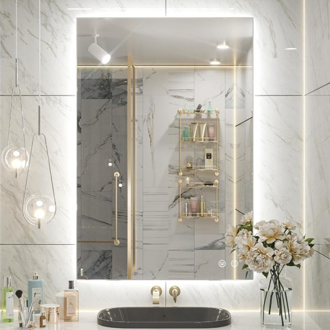
Keonjinn 24" x 36" LED Mirror for Bathroom, Backlit Mirror 6000K Daylight
Shop on AmazonStart With Budget-Friendly Options
A tight budget does not mean settling for a forgettable mirror.
Big-box retailers and online marketplaces both regularly carry well-designed, affordable mirrors that read as considerably more expensive than their price tag suggests.
A simple frame swap on your existing builder-grade mirror is often the single cheapest upgrade available in your entire bathroom.
Try a Small Space Mirror Trick
A tight bathroom does not rule out a great mirror setup.
It just asks for a bit more intention about the shape and mounting.
A corner mirror tucks into an otherwise wasted space.
An extendable swing-arm mirror pulls out only when you need it.
A mirrored medicine cabinet combines storage with reflection in the exact same footprint.
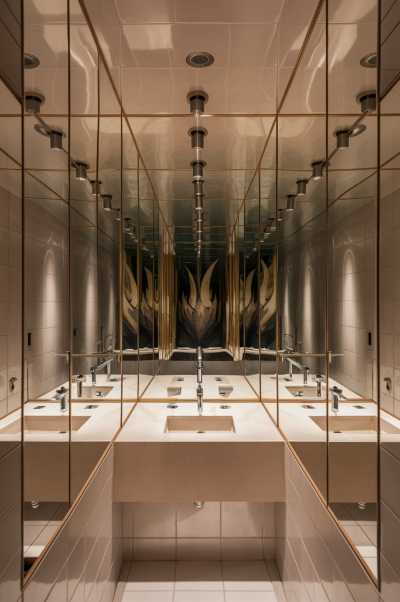
Go Smart
A smart mirror brings genuine functionality beyond reflection.
Built-in displays, anti-fog technology, and adjustable lighting settings all add real convenience to your morning routine.
It is a bigger investment than most of the other ideas here, but if you lean toward tech-forward design, the upgrade tends to feel worth it.
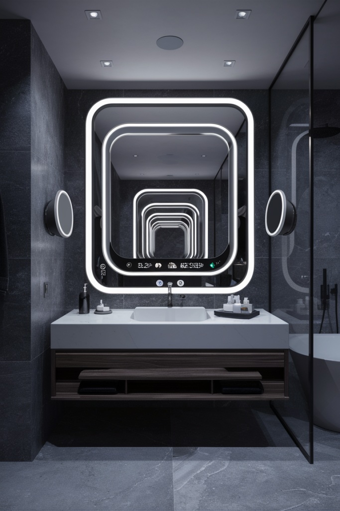
32"x24" Smart Waterproof Anti-Fog Vanity Mirror with 21.5" Touch Screen TV
Shop on AmazonTry a DIY Mirror Project
If you are feeling a bit crafty, a DIY mirror project does not require any real design background to turn out well.
Reframing a plain mirror with trim, tile, or reclaimed wood, or adding a hand-painted detail around the edge, both transform a basic builder-grade mirror into something that reads as custom.
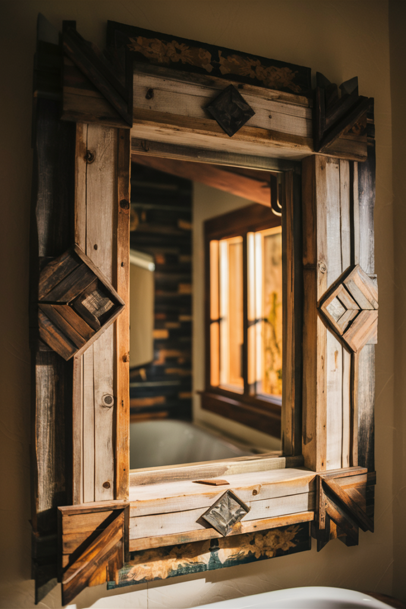
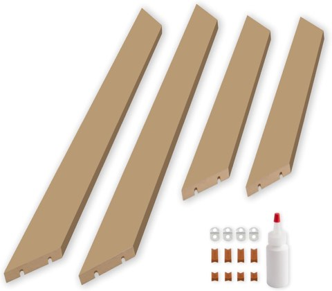
Frame My Mirror Add A Frame, Paintable Custom Size Mirror Frame Border Kit
Shop on AmazonConsider a Double Mirror Setup
A shared bathroom runs considerably smoother with two mirrors instead of one.
It eliminates the daily competition for mirror space during busy mornings.
Matching double mirrors, hung at equal heights above a double vanity, also read as more intentional than one oversized mirror stretched across two sinks.
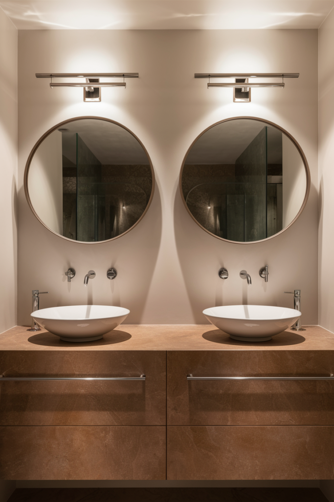
Make It a Statement
If you want the mirror itself to be the room's focal point, go big, bold, and a little dramatic.
An oversized, uniquely shaped, or heavily sculptural mirror is not for a space that wants to stay understated, but it reliably becomes the thing guests comment on first.
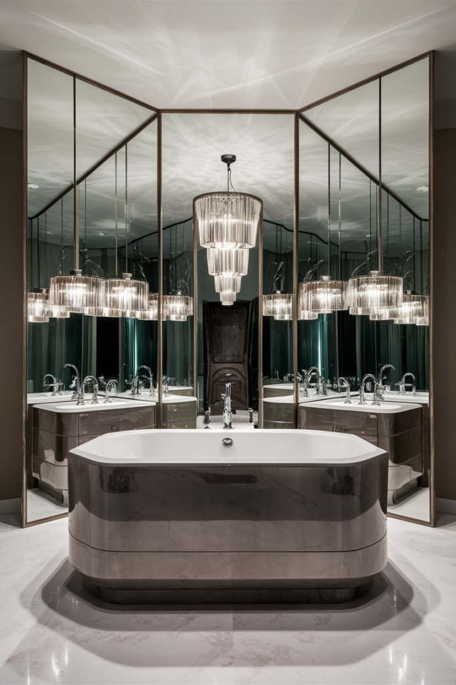
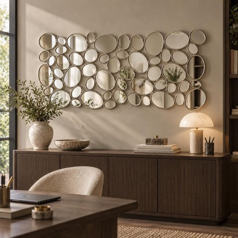
Silver Wall Mirrors Decorative, 51"x23" Large Modern Wall Mirror for Home Decor
Shop on Amazon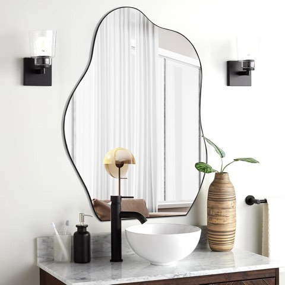
POZINO Irregular Mirror, 32"x24"Asymmetrical Mirror, Morden Odd Shape Mirrors
Shop on AmazonAdd Some Vintage Character
A vintage-style mirror brings genuine character to a vanity that a brand-new piece rarely matches.
Thrift shops and flea markets are consistently the best source for a one-of-a-kind find, and an ornate antique frame often costs less secondhand than a comparable new piece would.
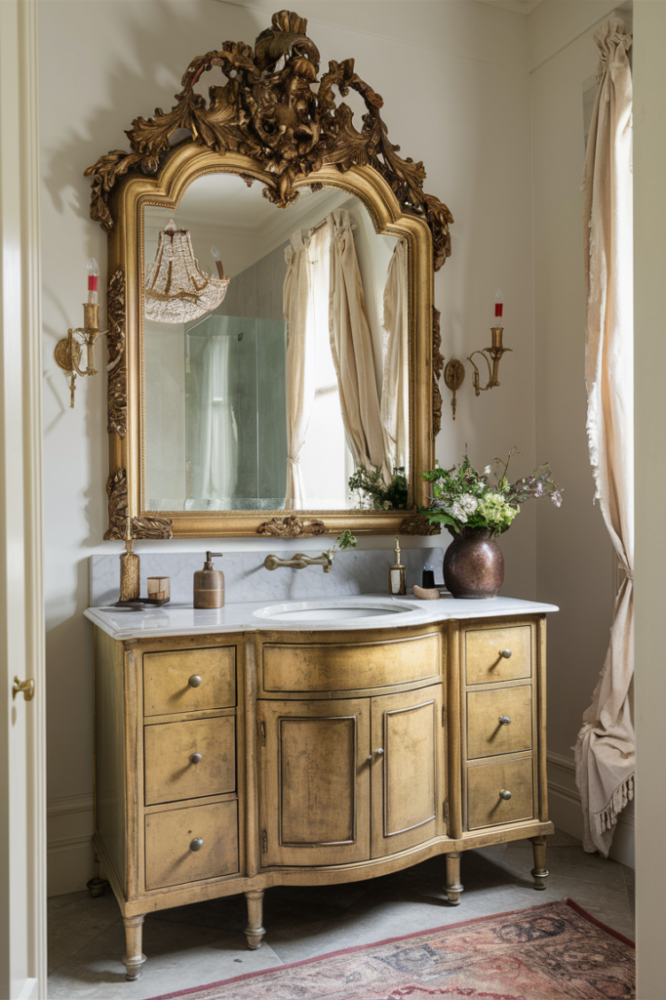
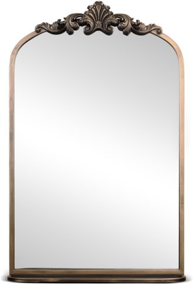
deerlove Traditional Arched Mirror with Shelf, 20.9x31.5 Inch, Antique Gold
Shop on AmazonGo Full Hollywood Vanity
A mirror ringed with individual bulbs brings genuine Hollywood-dressing-room energy to a bathroom vanity.
Beyond the dramatic look, this style is particularly practical for makeup application, since the surrounding bulbs eliminate the uneven lighting that leads to blending mistakes under normal bathroom lighting.
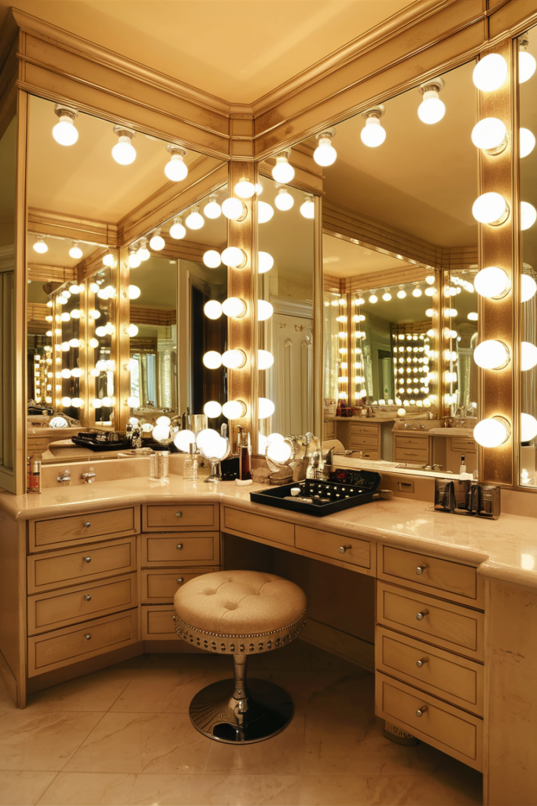
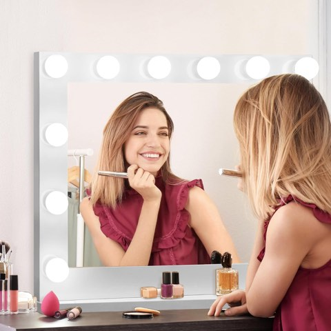
SUPER DEAL Hollywood Vanity Mirror with Lights, 20" x 25" Makeup Cosmetic Mirror w/14
Shop on AmazonLight It Properly
A lighted mirror brings genuinely useful, flattering light directly to where it matters most.
Makeup application and grooming both benefit enormously from light that does not cast awkward shadows.
Built-in LED strips around the frame, or a backlit edge that glows softly against the wall, both deliver that same even, shadow-free light.
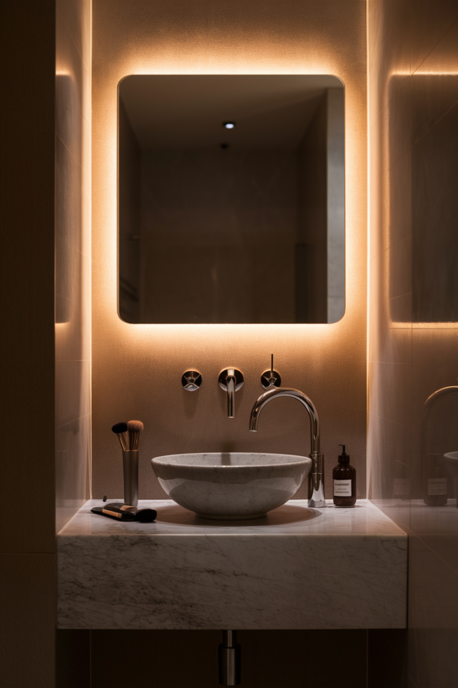

Keep It Classic With Rectangular
If you would rather skip the curves, a rectangular mirror brings a classic, dependable energy to a vanity that rarely goes out of style.
Hanging a tall rectangular mirror vertically creates a dramatic, almost boutique-hotel feel, while a thick wooden frame in white or walnut adds warmth without overdoing it.
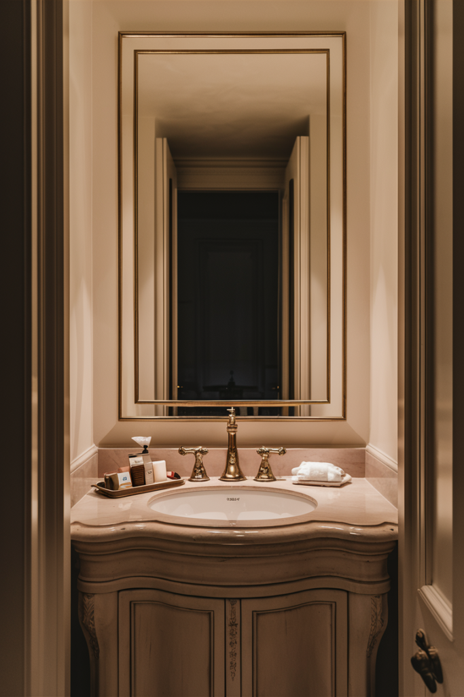
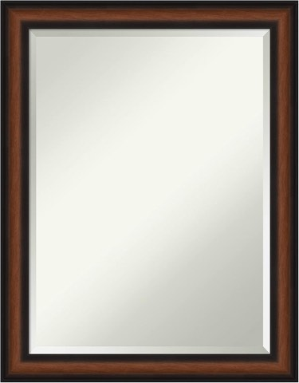
Amanti Art Brown Bathroom Mirror for Over Sink, 27x21 Yale Walnut Rectangle Vanity
Shop on AmazonSoften Things With a Round Mirror
Round mirrors soften the sharp edges a typical bathroom tends to have, which makes them an easy way to add a bit of visual relief.
A frameless round mirror keeps the look simple and sleek, suiting anyone drawn to a minimalist vanity, while a rattan or wood-framed version leans more boho, bringing in warmth a frameless one just cannot offer on its own.
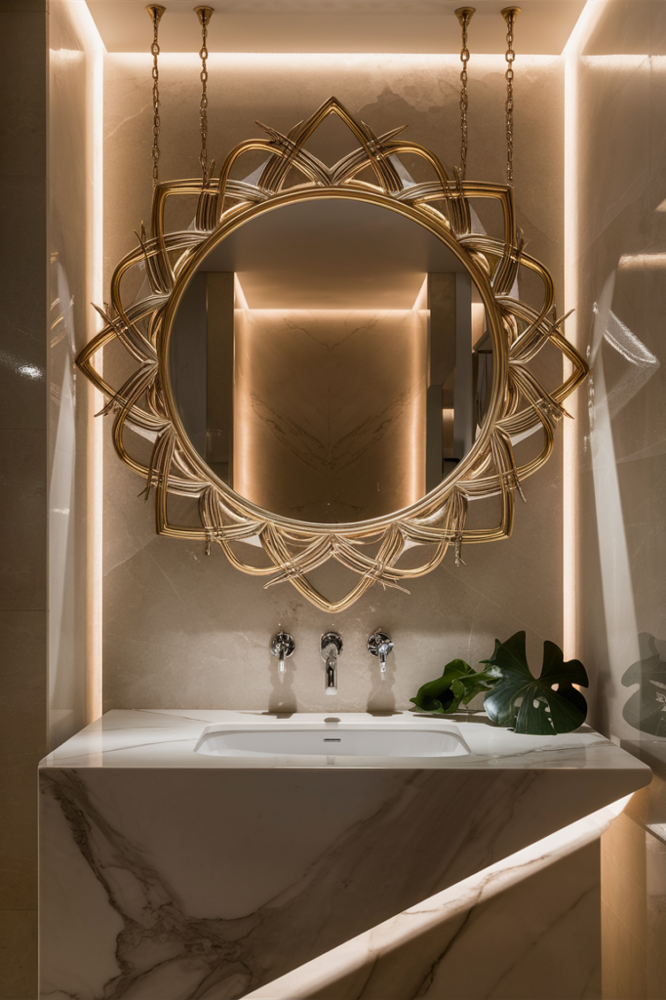
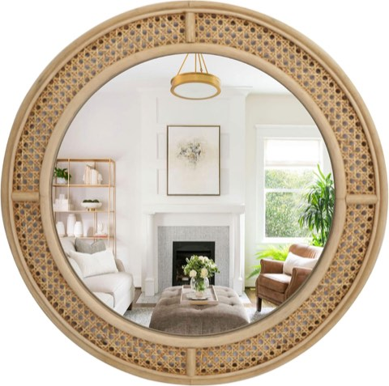
24" Boho Wall Mirror with Handwoven Rattan Frame, Farmhouse Round Mirror for Bedroom
Shop on AmazonThere is a Right One for Your Bathroom
None of these mirror styles require a full bathroom renovation to try.
A single mirror swap is one of the fastest, most visible upgrades a vanity area can get.
The strongest choice is usually the one that actually matches how your bathroom gets used day to day.
A lighted or Hollywood-style mirror if you do makeup there daily, a statement piece if you want the room to make an impression the second someone walks in.